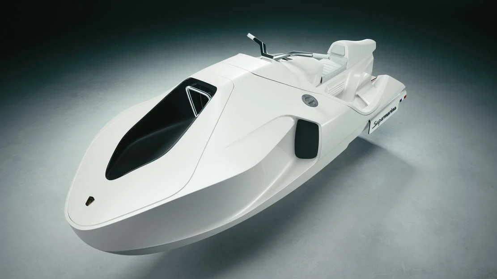

jetski piu veloce la mondo
MM01

- Nome: MM01 (presumibilmente un prototipo per il futuro dell'aviazione supersonica, sviluppato da una società o progetto di aviazione avanzata).
- prezzo: Tra i 276.000 EUR e i 460.000 EUR
- Tipo di velivolo: Aereo supersonico progettato per viaggiare a velocità superiori a Mach 1 (la velocità del suono).
- Velocità massima: Sebbene i dettagli specifici possano variare, il MM01 è stato progettato per raggiungere velocità nell'ordine di Mach 2.2 - 2.5, cioè circa 2.600-3.000 km/h.
- Motore: Probabilmente equipaggiato con motori a turbofan avanzati che permettono di raggiungere velocità supersoniche, mantenendo l'efficienza per voli a lungo raggio.
- Lunghezza: La lunghezza tipica per un aereo supersonico di questo tipo potrebbe variare, ma dovrebbe essere nell'ordine dei 20-30 metri, simile a quelli dei vecchi Concorde.
- Autonomia: In genere, i velivoli supersonici come l’MM01 sono progettati per avere una autonomia di volo di circa 4.000-6.000 km, permettendo viaggi transoceanici veloci.
- Progetto: Il MM01 rappresenta una nuova generazione di aerei supersonici, sviluppata per superare alcune delle limitazioni di modelli precedenti come il Concorde, che era noto per il suo impatto ambientale e i costi operativi elevati.
TORNA ALLA HOME